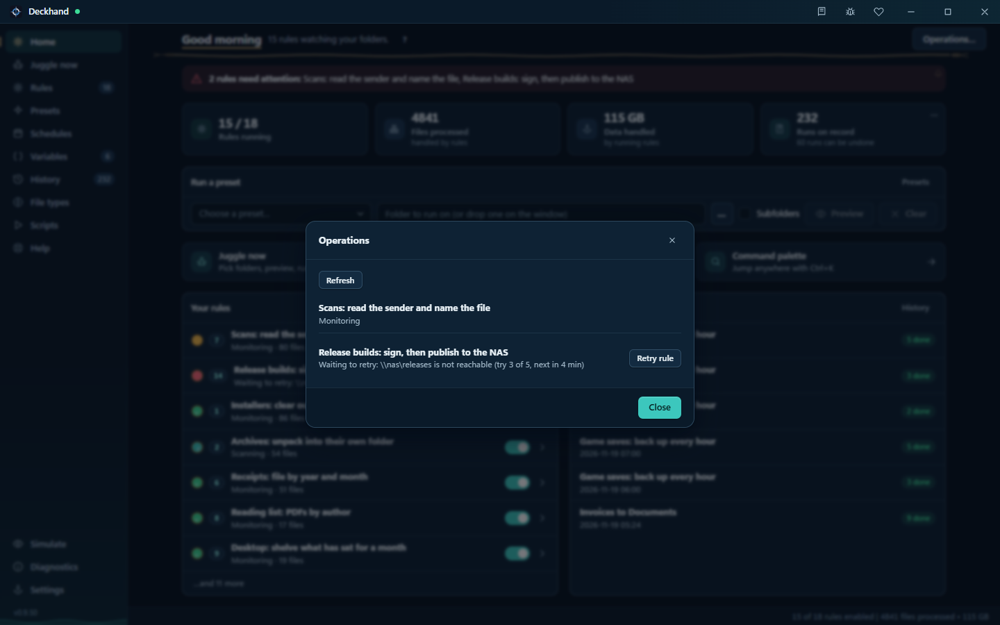
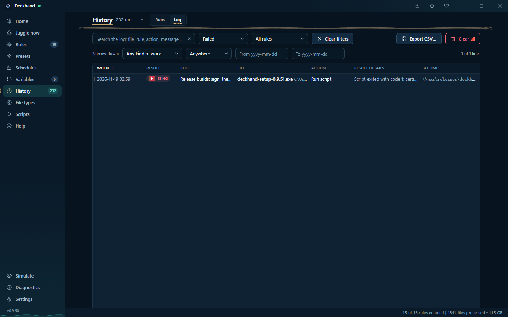

Troubleshooting and FAQ
Why a file was not moved, what the warnings mean, and quick answers.
A file was not moved
Work down this list. The first screenshot is Operations on the Home page, which lists the rules that need attention, what is wrong with each and a Retry rule button where retrying helps. The second, further down, is the Log with its result filter set to Failed. It lists the failed action with the reason in the Result details column.


The Log filtered to failed lines:


- Is the rule on? Check its switch and, if it is in a group, that the group is on.
- Is the file still changing? Deckhand waits until a file has been unchanged for 15 seconds by default. Files ending in
.crdownload,.partor.tmp, locked files and online-only cloud files are left alone. A preview lists them under Not ready. - Is it hidden, system or read-only? These are skipped unless you allow them in Settings.
- Did the rule handle it already? Each rule handles a file once per modified time. Saving a rule clears its memory, so it looks again.
- Is it excluded? Check Exclusions and the preview's Excluded tab.
- Is it already in a destination folder? Ignore files already in the folders this rule moves to is on by default.
- Did an earlier rule move it? Rules run top to bottom, and the next rule sees the file where the first left it. Use Simulate to follow it.
- Does the condition really match? Use Preview and look at No match. Remember that unfinished rows never match. For a File contents condition, open its gear and choose Show what Deckhand reads from a file... to see the text Deckhand really gets from that file. A scan or picture with no text of its own is only read when OCR is ticked.
- Is the PC on battery? Pause rules on battery in Settings makes rules wait until the PC is plugged in. The rule status says so.
OCR says it is not available
A File contents condition or variable reads text from pictures and scanned PDFs through the OCR built into Windows. When it cannot, the gear of that condition shows a message instead of just ticking the option:
- Windows has no OCR language installed, so pictures and scans cannot be read. Add a language in Windows Settings under Time & language, Language & region, and make sure its Optical character recognition feature is installed. Then reopen the gear. The Language list in Settings, Text in pictures and scans (OCR), then shows it.
- The OCR language ... chosen in Settings is not installed in Windows. Choose another language in the Language list of that card, or install the one you chose. Empty means the languages of your Windows profile.
- ... which is not available on this system. Windows OCR is only available on Windows.
Clear OCR cache on the same card forgets the text Deckhand already read from pictures. Use it after you change the language.
OCR can misread. Files matched only by recognised text are marked in the preview, and a file is never deleted, recycled or overwritten because of such a match unless you approve it. Text files, PDFs with text and Office files do not need OCR at all.
Two rules or presets have the same name
Names are not unique. Deckhand warns when you save a rule or preset with a name that already exists (A rule called ... already exists. Save anyway?) and lets you save it, so you can end up with two of the same name. Rename one of them so you can tell them apart. In the Rules page the group and the watched folders tell them apart too.
The command line and AI clients use the id, which is always unique. If you give a name that matches several rules or presets, the command line does nothing, lists the candidates with their ids and exits with code 6. Run it again with an id. See Command line.
A rule needs attention
Open the rule and read its status line. Common reasons: a folder that no longer exists, a destination Deckhand cannot write to, or a step that failed. Failed files show in History → Problems with the reason.
Windows SmartScreen shows a warning
The portable GitHub download is unsigned, so SmartScreen may show an unknown-publisher warning. Compare the file's SHA-256 with the checksum published on the release before running it. The Microsoft Store version is signed.
Deckhand does not start or shows a blank window
Deckhand needs the Microsoft Edge WebView2 Runtime. Install the Evergreen Runtime from Microsoft and try again.
Undo did not put everything back
Undo restores files as far as it still can. A file you changed after the run is left alone and reported. Permanent delete and the effects of commands and scripts cannot be undone. See Preview, Run and Undo.
A rule keeps running on the same files
Deckhand records what a rule created and the file's new modified time so copies inside a watched folder do not trigger the rule again. If you still see loops, narrow the conditions or send the output outside the watched folder.
Two rules fight over a file
Make their conditions exclusive. There is no "stop processing" step. For if/else behaviour, give the second rule the opposite condition using None of or a not group.
FAQ
Is Deckhand free? Yes, for personal and commercial use. It is in beta.
Does it send my files anywhere? No. Deckhand does not require an account, send telemetry, or upload your files. Scripts you write and AI clients you connect have their own behaviour. See Privacy.
Can I move my rules to another PC? Yes. In Settings, export your library and settings, then restore or import on the new PC. Imported rules start disabled so you can check their paths first.
Can I run a rule once without watching? Yes. Use Preview and Run, or run a preset on a folder.
Where do I report a bug? Use the issue form. Issues are public, so remove personal file names and paths from anything you attach.